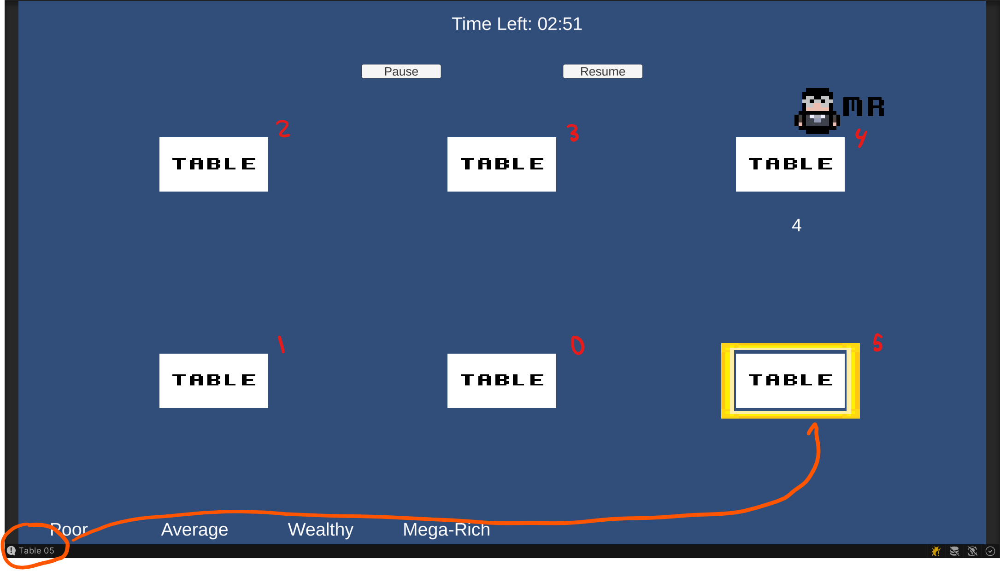

Cabaret Club Czar
This type of project is something I thought I try out. Taking a concept or core idea of a game, and attempting to recreate it. The idea that I decided to recreate was from a beloved game series that I hold near and dear to my heart is the Ryu Ga Gotoku/Yakuza series. The status of the project is currently in development.
Recent Updates

July 26th, 2021
- Using the arrow keys, you're able to highlight/move to the different tables.
- Pressing enter at the moment returns what table you have selected. Will come in handy later on...
July 26th, 2021
- Once the countdown timer hits zero, the customer would sit down at the time.
- Another countdown timer would begin, this time, the customer would wait for a hostess to join them.
- If the timer goes to zero, the timer would go back up to four seconds one more time as a last chance.
- But if again, the timer goes down to zero, the customer would leave.

July 14th, 2021
- Logic for the customer and table. At a certain time, if there are tables avaliable, a customer would come in. When a customer does come in, a table would be selected to be occupied.
- Overall timer has been placed, would count down to zero and logic to pause and resume timer for use during certain events has been set up.
More Information
Download
cabaret-Club-Czar.zip 23.1 MB
Installation Instructions
Download the .zip folder and extract it. Launch the executable (.exe).
Repository Link
https://github.com/ASGitH/unity-dFTR
Tools Used
Game Engine - Unity Game Engine
Modeling Software - MagicaVoxel